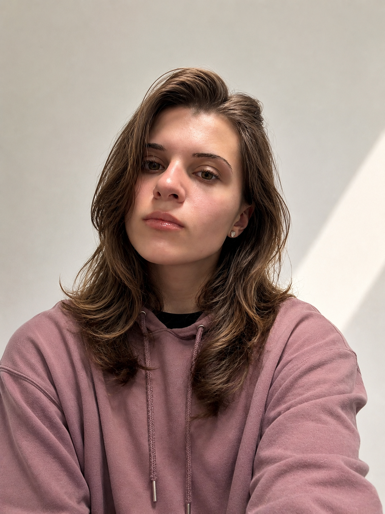
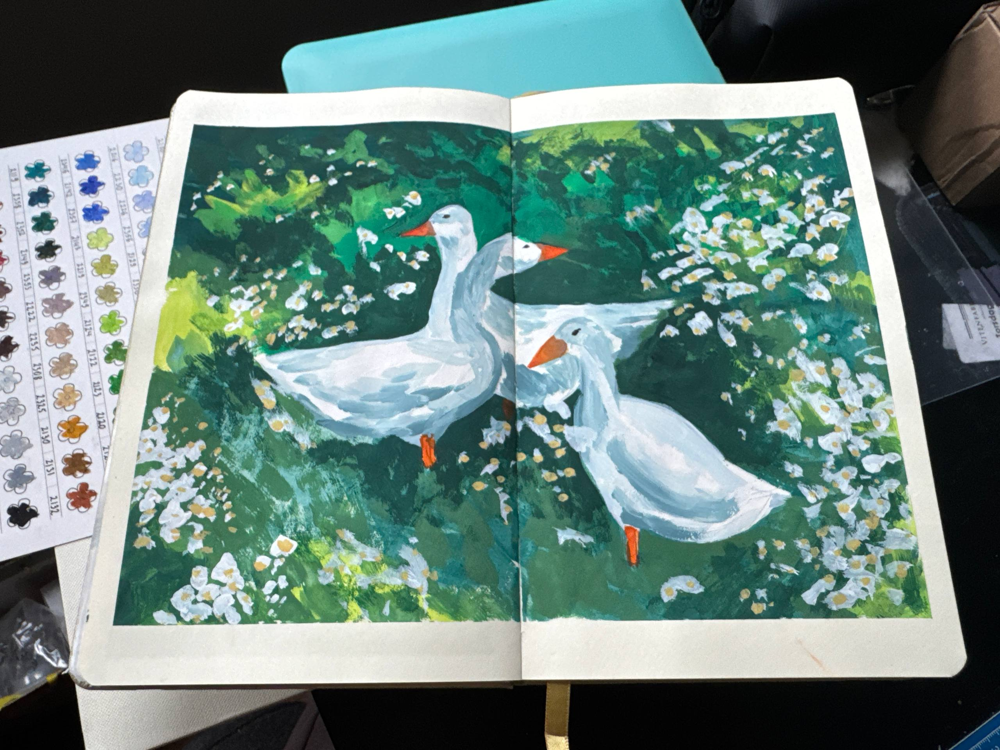
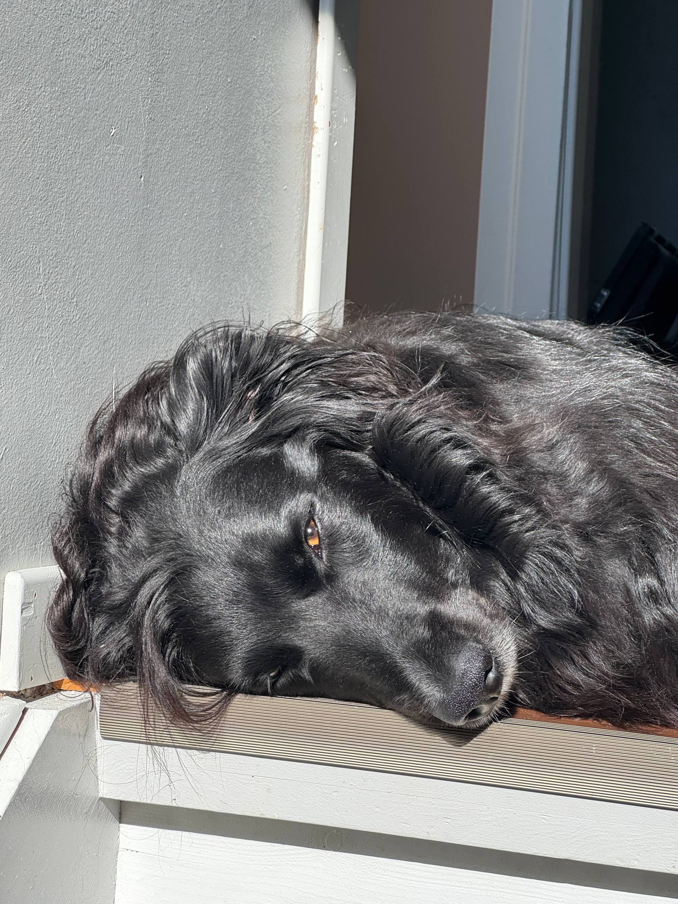
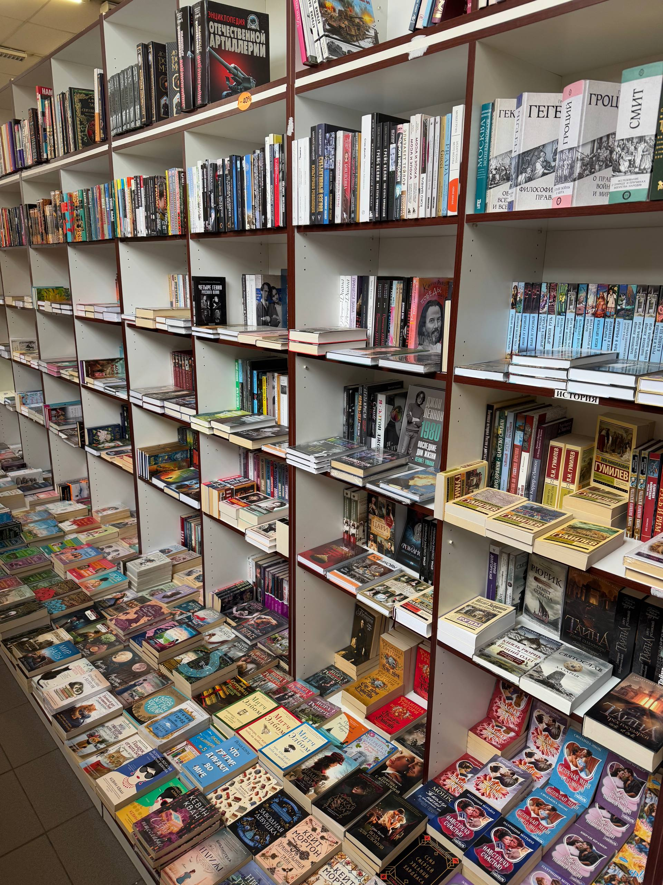
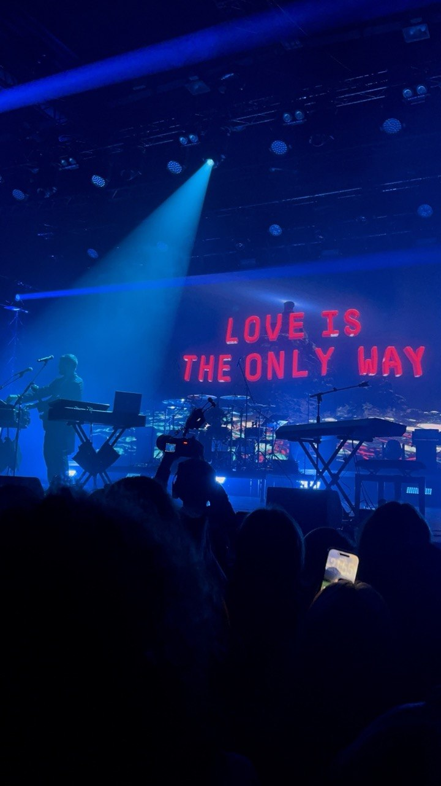
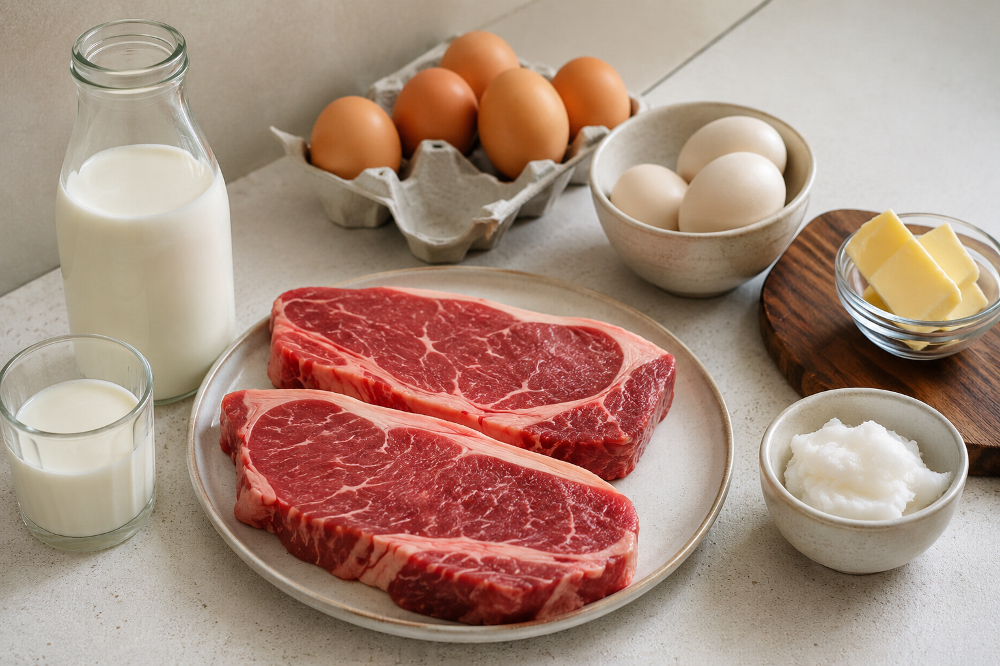
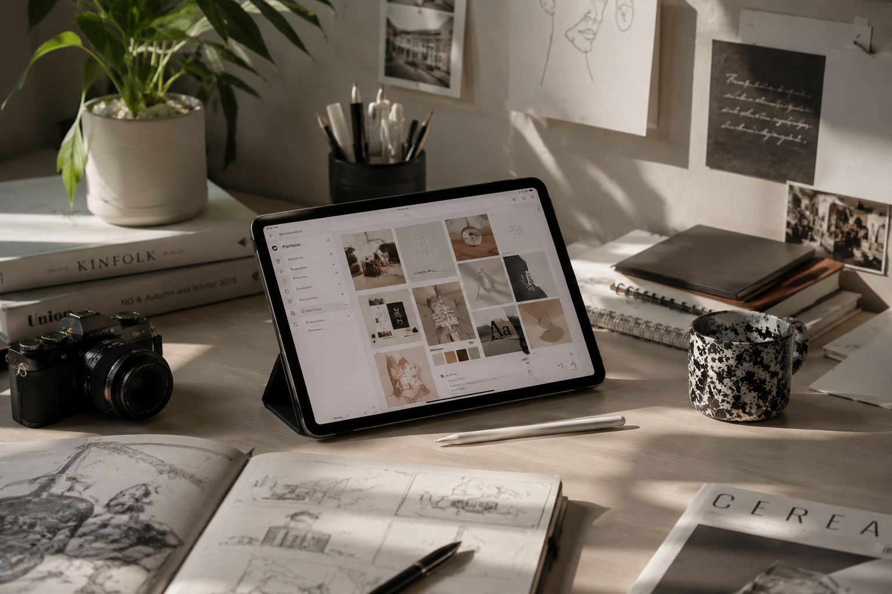

I've been drawing and designing for as long as I can remember.
Creativity has always been a part of me — from sketching in notebooks to building ideas, making things by hand and imagining new worlds.
I've been creating for as long as I can remember.
As a child, I spent countless hours drawing, sketching ideas and making things by hand. Creativity has always been my way of understanding the world and expressing myself.
My journey eventually led me to study Philosophy, where I developed a deep interest in people, ideas and the way we experience the world around us. This background taught me to think critically, ask meaningful questions and approach design from a human-centered perspective.
Today I combine that curiosity with UX/UI design and front-end development. I enjoy transforming ideas into thoughtful digital experiences that are not only beautiful, but also functional and accessible.
Outside of design, I love music and storytelling. I write my own songs and play several types of guitars. Music allows me to explore creativity in a completely different way and often inspires my visual work.
In my free time I enjoy creating content for my personal blog, filming videos and documenting everyday moments. Whether it's through design, music, writing or video, I'm always looking for new ways to tell stories and connect with people.
My goal is to build meaningful experiences that inspire, help and leave a positive impact.

I've been drawing and designing for as long as I can remember.
Creativity has always been a part of me — from sketching in notebooks to building ideas, making things by hand and imagining new worlds.

Painting

Ivasik

Reading

Concerts

I believe in staying true to what makes me feel strong, focused and healthy. Meat, simplicity, discipline and balance.
simple food, strong mind.

I dream of working in a creative profession where I can combine design, art and technology to inspire, solve problems and create meaningful experiences.
My goal is to work on projects that make a difference and leave a positive impact.